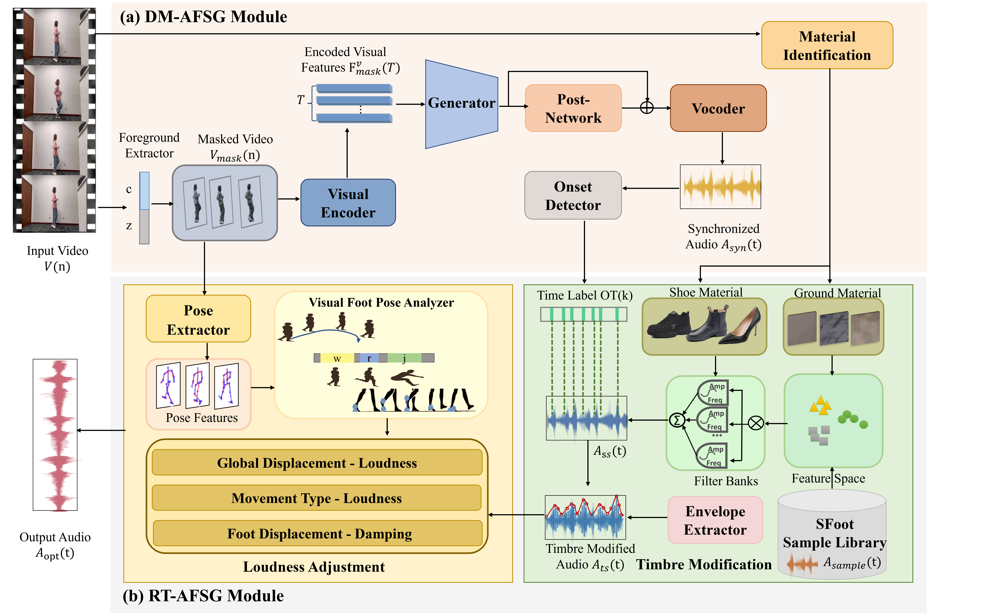

RD-VTA: Rule-Data Guided Video-to-Audio Generation for Fine-Grained Footstep Sound
Qiutang Qi1, Haonan Cheng1, Hengyan Huang1, Long Ye1, Shaobin Li1
1 Communication University of China, China
Abstract
It is challenging to implement visually guided fine-grained footstep sounds based on a limited number of samples in complex scenes. This is due to the interference of redundant information in the complex background of the visual scene for audiovisual mapping. As well as the complex coupling of sound features makes audiovisual fine-grained linear mapping difficult. To address the mentioned problems, we propose an automated video-to-audio generation method (RD-VTA) for footstep sound that incorporates data-driven and rule-based modelling approaches. First, we design a data-driven masked footstep sound generation network (DM-AFSG) to acquire audiovisual temporal concordance. The network is capable of separating visual sound objects, reducing background redundant interference, and generating initial target sounds that capture temporal cues. Secondly, a rule-based fine-grained footstep sound adjustment method (RT-AFSG) is designed based on visual guides such as material, motion type and displacement distance. The proposed RT-AFSG effectively achieves diverse sounds with a limited number of sound samples through sound texture analysis and modification. Moreover, it constructs the mapping relationship between different visual cues and footstep sounds, and realizes the fine variation of footstep sounds. To adequately validate the effectiveness of the method in terms of audiovisual temporal consistency and content granularity, we perform objective synchronization metrics and subjective human evaluation on the footsteps audiovisual dataset VAFoot. The experimental results show that the method obtains an average of 5 % improvement in sound synchronization performance and significantly outperforms several existing methods in terms of sound content granularity.

Figure 1: The pipeline of RD-VTA method. Our model takes footstep sound and video frames as input. After foreground extraction, feature extraction, and visual coding at DM-AFSG, the video data is fed into the generator along with the sound to obtain the synchronised footstep sound. Then, the synchronised footstep sounds are subjected to fine-grained timbre and loudness adjustment in the RT-AFSG module to synthesise the final footstep sounds.
Some Examples
We demonstrate here the Im2Wav comparison method and also the current AI generation of Sound Effect results for the large model Pika.
| Ground Truth | Im2Wav | Pika(Sound Effect) | Ours |
| Indoor Text：A woman is walking in place on the carpet wearing sneakers. | |||
| Indoor Text：A woman wearing sneakers is walking towards the distance on tile. | |||
| Indoor Text：A woman is running back and forth on a tiled floor wearing boots. | |||
| Indoor Text：A man is wearing sneakers on the carpet floor, jumping first and then walking. | |||
| Indoor Text：A woman is jumping on the concrete floor wearing sneakers. | |||
| Indoor Text：A man is jumping forward on a tiled floor wearing sneakers. | |||
| Outdoor Text：A man is walking on a concrete floor wearing sneakers. | |||
| Outdoor Text：A woman is wearing sports shoes and jumping in place on the wood floor. | |||
| Outdoor Text：A man is walking on a concrete floor wearing sneakers. | |||
| Outdoor Text：A woman is running in circles on a concrete floor wearing sneakers. | |||
| Outdoor Text：A woman is running and jumping in circles on the concrete floor wearing boots. | |||
| Outdoor Text：A woman is wearing sports shoes and jumping in circles on the concrete floor outdoors. | |||
| Outdoor Text：A woman is dancing on a wooden floor wearing high heels. | |||
| Indoor Text：A woman is wearing sports shoes and running in place on the soil ground. | |||
| Outdoor Text：A woman is tiptoeing on the soil ground wearing sneakers. | |||
| Outdoor Text： A man is running forward on the soil ground wearing sports shoes. | |||
| Outdoor Text：A woman is walking forward on the carpet wearing sneakers. | |||
Acknowledgement
This website is created based on https://tango-web.github.io/